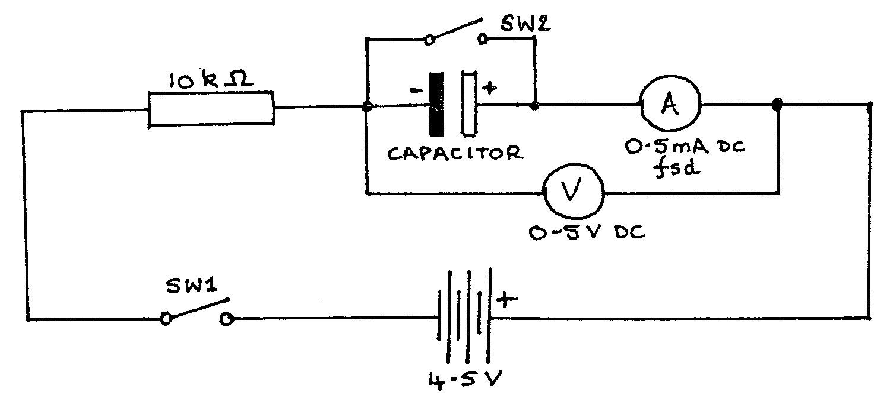
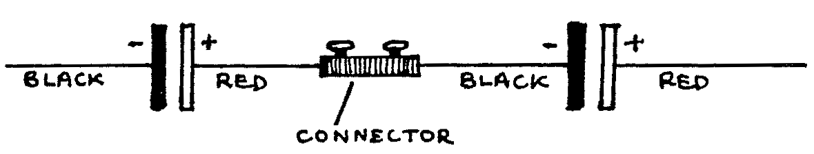
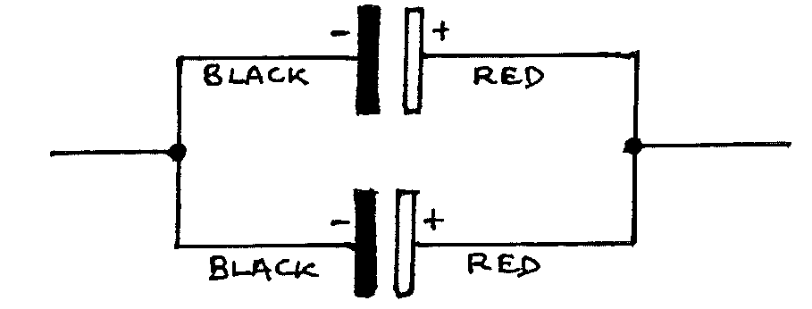

F1-2: Charging Capacitors¶
Apparatus¶
Capacitors (2 \(\times 1000\mu\text{F}\), electrolytic); voltmeter (high resistance, \(0-5\text{Vdc}\) eg multimeter); ammeter (\(0.5\text{mA}\) fsd); resistor (\(10\text{k}\Omega\)); \(4.5\text{V}\) battery; 2 switches; stopclock; 9 connecting leads; 2 blocks with crocodile clips; 2 sheets of graph paper.
IMPORTANT: The battery must not be connected until your circuit has been checked by a teacher (an error could seriously damage the ammeter).

Procedure¶
Construct the circuit as above using one capacitor. Connect the battery after the circuit has been checked.
Leave \(SW2\) open. Close \(SW1\) and notice how \(V\) and \(I\) change as the capacitor charges. Open \(SW1\), then close \(SW2\) briefly to discharge the capacitor again.
Close \(SW1\) and start the stopclock at the same moment. Note readings of \(V\) at \(t = 0, 10, 20, ...\) up to \(100\text{s}\) . Open \(SW1\), then discharge the capacitor by closing \(SW2\) briefly.
Close both \(SW1\) & \(SW2\), and note the value of \(I\) at \(t = 0\). Open \(SW2\) (to allow charging to start), starting the stopclock at the same moment. Note readings of \(I\) at time \(t = 10, 20, 30 ...\) up to \(100\text{s}\).
Tabulate your readings of \(V\), \(I\), and \(t\).
Replace the single capacitor by two capacitors in series:

Repeat steps 2 to 5.
Replace the series capacitors by two in parallel:

Repeat steps 2 to 5.
Analysis¶
Plot a graph of \(V\) vs. \(t\) for all three arrangements of capacitors on the same sheet of graph paper. Label each line clearly.
Plot a graph of \(I\) vs. \(t\) on another sheet, labelling the three lines clearly.
Find the area under the \(I\) vs. \(t\) curve for the single capacitor, using the axes scales. This is the total charge stored in coulombs (ask for help if you have not done this before).
From the \(V\) curve for the single capacitor read the maximum value \(V_{MAX}\).
Calculate the capacitance using:
\[C = \frac{Q}{V} \quad = \quad \frac{\big(\text{Total charge stored}\big)}{V_{MAX}}\]Repeat analysis steps 3, 4, and 5 for the capacitors in series and in parallel.
Assuming that each capacitor has value 1000\(\mu\)F\(\pm 10 \%\), and using the formulae for capacitors in series or in parallel, calculate the range of possible values for each of the three arrangements in the experiment. If your values from step 5 lie outside these ranges, suggest possible reasons for error.
Draw a line on the \(V\) graph, parallel to the \(x\)-axis, at \(V = \frac{5}{8} V_{MAX}\). For each of the three curves read the time when \(V = \frac{5}{8} V_{MAX}\).
\(\tau = RC\) is called the time constant of the circuit. (\(\tau\) is Greek “tau”). This is the time taken for the potential difference (p.d.) to rise to \(\frac{5}{8}\) of its final value (approximately).
a) Calculate the values of \(RC\) using the values of capacitance found in step 5.
b) Compare these calculated times with times obtained experimentally (analysis step 8).
\(V_{MAX}\) should equal the battery voltage, but in the experiment it is lower. Why?
(Hint: take into account the resistance of the voltmeter).